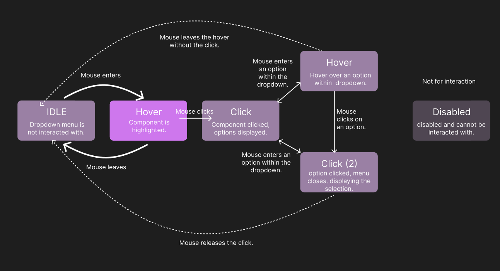
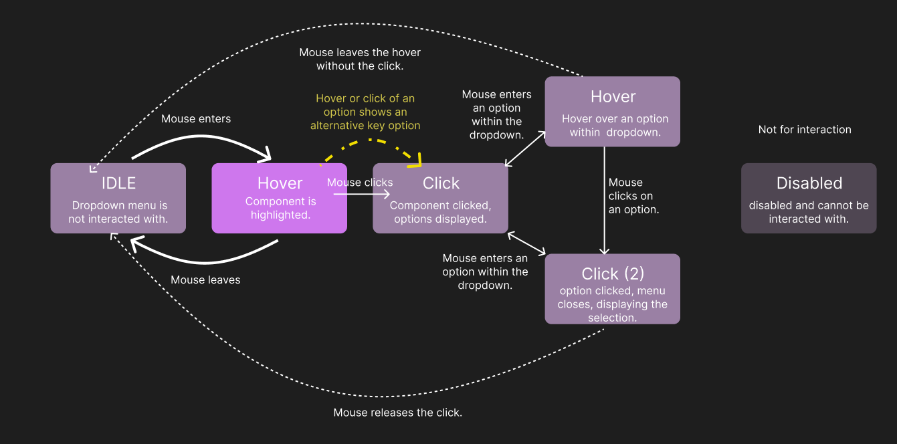
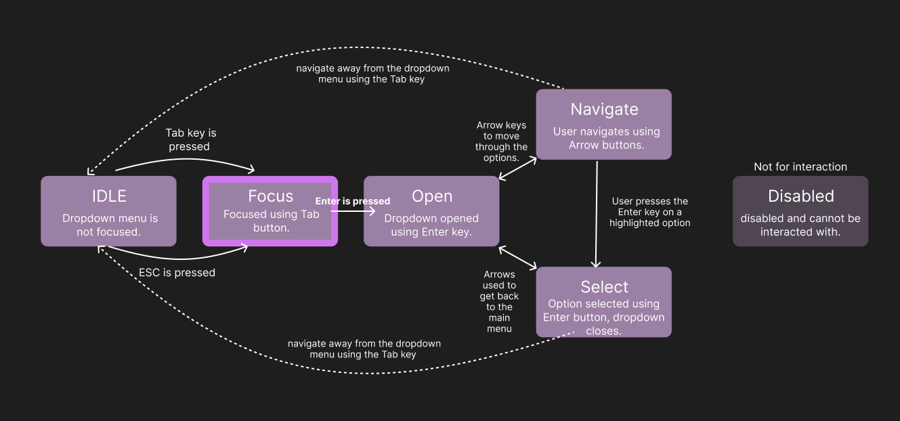
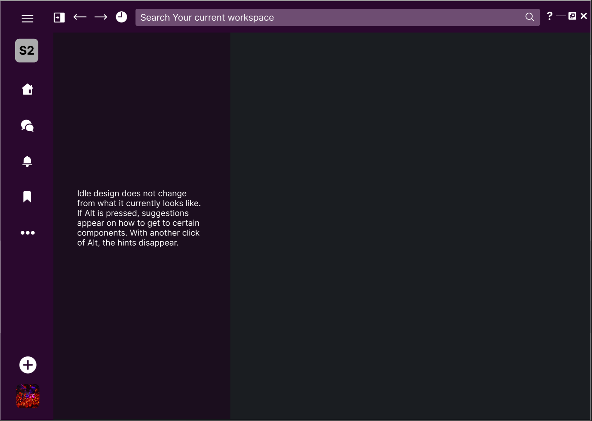
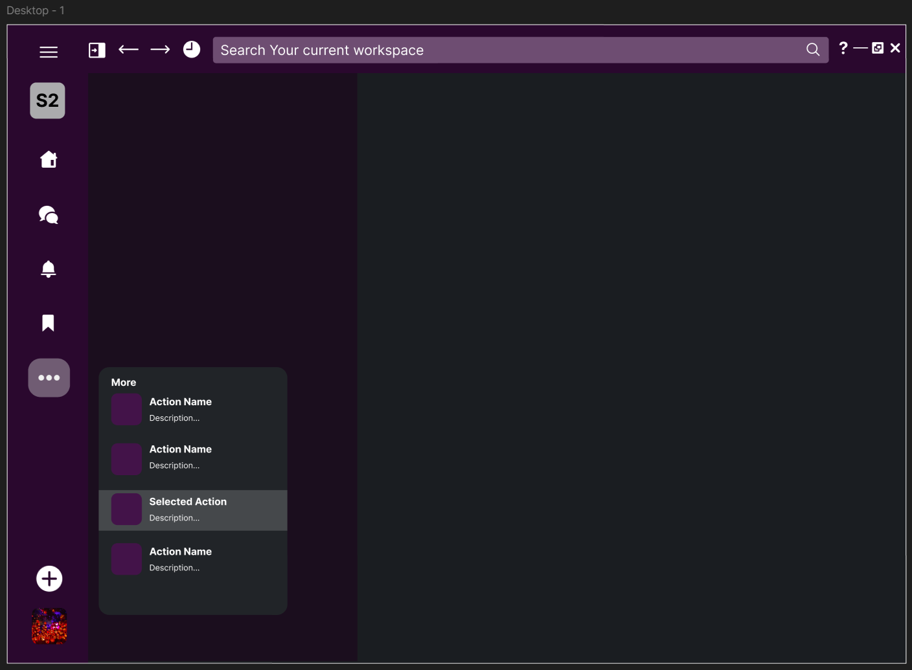
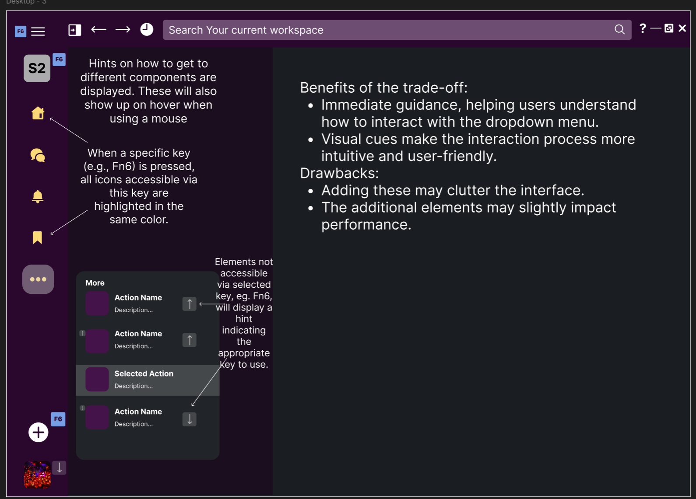

Welcome to my exploration of dropdown lists! This case study dives into how dropdown menus can be designed to be more user-friendly and inclusive. We'll look at how different input methods (like mouse, keyboard, and touch) interact with dropdowns across various applications, and how these components visually and textually represent their states. You'll see how we can redesign dropdowns to balance ease of use, efficiency, and accessibility, making them better for everyone (or almost everyone!). Join me on this journey to make dropdown lists more accessible and enjoyable for all users! 🚀
Note: Since we are exploring Dropdown Lists, each part of this case study is under a dropdown list itself :)
Part 1: Input
Welcome to our interactive playground, where every click, swipe, and hover brings your digital experience to life! 🌟
This website is designed to be more than just a collection of pages — it's a dynamic journey where inputs and outputs work together to create an enjoyable experience.
We will explore how different platforms implement a well known component - a dropdown list - in different, yet similar ways!
Below, you can choose one of 3 components I looked into and explore what interactoins with them look like for mouse and keyboard users. The interactions are represented by gif videos. For accessibility purposes, you will need to Click on the image to reveal the video. You can hide it by clicking again. You can choose to watch one, two or none videos at the same time.
General Feedback/Reflection (Consolidated reflection on all of the above)
| Aspect | Google Sheets | Slack | File Explorer |
|---|---|---|---|
| Process of Interacting | Initial navigation to the dropdown menu is tricky, but once there, it's easy to use. | Navigation is less intuitive but functional with keyboard shortcuts. | Most accessible and user-friendly with both mouse and keyboard. |
| Functions | Can navigate, select, and close the menu with keyboard shortcuts. | Similar functions but less intuitive navigation. | Comprehensive navigation and selection with keyboard shortcuts. |
| Learnability, Memorability, Efficiency | Moderate learnability and efficiency once familiar with navigation. | Lower learnability due to less intuitive shortcuts but functional. | High learnability, memorability, and efficiency with intuitive navigation. |
Visual Representation of Inputs
| Interaction Method | Google Sheets | Slack | File Explorer |
|---|---|---|---|
| Mouse/Touchpad |
|
|
|
| Keyboard |
|
|
|
| Touch |
|
|
|
Part 2: Output
In Part 2 of our adventure, we'll dive deeper into the interactions and explore how visual styles like color, opacity, and appearances enhance our experience. We'll also uncover hidden outputs like alt text and component names, which are revealed by screen readers, ensuring accessibility for all users.
Output
| Application | Visual Style | Screen Reader | Hidden Outputs | Focus Order (Logical Sequence) |
|---|---|---|---|---|
| Google Docs | Color change, highlight (greys out) on hover and press | A very uncomfortable experience. It was very hard to get to the menu bar, and the narrator would read out things that are not relevant. There is also a conflict between narrator's shortcuts and Google Docs', so I was unable to move using the keyboard becasue the narrator just read words letter by letter when Tab was pressed instead of moving to the next item. | Alt text, component names read outloud | Tab -> Enter -> Arrow keys -> Enter -> Tab |
| Slack | Opacity, border thickness change | Moderate experience, as long as the person already knows the shortcuts and keys that need to be pressed. The narrator is not the best and not the most intuitive but helps navigate. | Alt text | Fn6 -> Enter -> Arrow keys -> Enter -> Tab |
| File Explorer | Color change, highlight on hover | The most comfortable experience. Not ideal as navigating is still not easy but there are no conflicts and the narrator just read what is being pressed. I was able to get to the same point as with a mouse the fastest using just screenreader and not looking at the screen. | Alt text, component names | Tab -> Enter -> Arrow keys -> Enter -> Tab |
Part 3: State Models
State Models for Slack
We're taking our exploration to the next level by diving into the world of state models and user interactions. Using the insights you've gathered about interactions and accessibility from Parts 1 and 2, it's time to create your own version of a selected component. We'll start by thinking about the different states it can be in and how users interact with it.
First, we'll create two state models to visualize these interactions:
- How does the component respond to clicks, hovers, and other mouse actions?
- How does the component handle focus, key presses, and other keyboard interactions?
Mouse User State Model (Click to Expand)
 Keyboard User State Model (Click to Expand)
Next, we'll be revising state models. We will make an intentional trade-off to alter how we perceive the learnability, memorability, efficiency, and accessibility of the dropdown component.
(Click to Expand) Idle State
Selected Dropdown List
Improved Version with Trade-off
Trade Off Idea
In Slack (and many other applications/websites), the learnability and intuitiveness of navigating dropdown lists without using a mouse are not great.
It is difficult to understand what is clickable/expandable and with which keys.
To improve this, I propose the following trade-off:
Part 4: Reflection
Usability and Accessibility of Observed Components
Google Sheets
Usability: Once the dropdown menu is accessed, it is easy to navigate and use.
Accessibility: Keyboard shortcuts are available, but initial navigation is tricky.
Application to Design: In my design, I ensured that keyboard shortcuts are clearly indicated and easy to use, improving initial navigation.
Slack
Usability: Functional with keyboard shortcuts, but less intuitive.
Accessibility: Navigation is possible but not straightforward.
Application to Design: I proposed highlighting accessible icons and providing hints for non-accessible elements, making navigation more intuitive.
File Explorer
Usability: Highly accessible and user-friendly with both mouse and keyboard.
Accessibility: Comprehensive navigation and selection with keyboard shortcuts.
Application to Design: I aimed to replicate the intuitive navigation and comprehensive keyboard support in my design.
Addressing Unaddressed Accessibility Considerations
Color Dependence: My design initially relied on color to indicate accessibility, which could be problematic for visually impaired users. To address this, I included text hints and tooltips to provide additional guidance.
Screen Reader Support: Ensuring that all interactive elements are properly labeled and announced by screen readers was a key consideration that I incorporated into my design.
Solving for a "Mismatch"
Mismatch Definition: According to the Kat Holmes video "Rethink What Inclusive Design Means", a mismatch occurs when the design of a product does not meet the needs of its users, creating barriers to use.
Solving the Mismatch: By highlighting accessible icons and providing hints for non-accessible elements, my design addresses the mismatch of unclear navigation for keyboard users. This change makes it easier for users to understand and use the dropdown menu without a mouse, improving overall accessibility.
Impact of Accessibility on Users with Impairments
Positive Impact
Keyboard Navigation in File Explorer:
Impact: Users with motor impairments can navigate and select options using only the keyboard, making the application more accessible.
Example: A user with limited hand mobility can efficiently use the dropdown menu without needing precise mouse movements.
Screen Reader Announcements in Slack:
Impact: Users with visual impairments can understand the current state and options of the dropdown menu through screen reader announcements.
Example: A user who is blind can navigate and select options in the dropdown menu with the help of clear audio feedback.
Negative Impact
Color-Dependent Indicators in Slack:
Impact: Users with color vision deficiencies may struggle to distinguish between accessible and non-accessible elements.
Example: A user with red-green color blindness may not be able to see the highlighted icons, making navigation difficult.
Complex Keyboard Shortcuts in Google Sheets:
Impact: Users with cognitive impairments may find it challenging to remember and use complex keyboard shortcuts.
Example: A user with a learning disability may struggle to navigate the dropdown menu due to the difficulty in remembering the required key combinations.
Prioritization of User Groups in Component Design
Commonly Prioritized Users: Mouse Users: Often prioritized due to the prevalence of mouse-based interactions in desktop applications. This can lead to highly intuitive and efficient mouse interactions but may neglect the needs of keyboard, touch/mobile, and screen reader users.
Impact on User Experience:
- Keyboard Users: May experience less intuitive navigation if keyboard shortcuts are not well-documented or easy to use.
- Touch/Mobile Users: May face challenges if touch targets are not optimized for mobile interactions.
- Screen Reader Users: May struggle with accessibility if interactive elements are not properly labeled or announced.